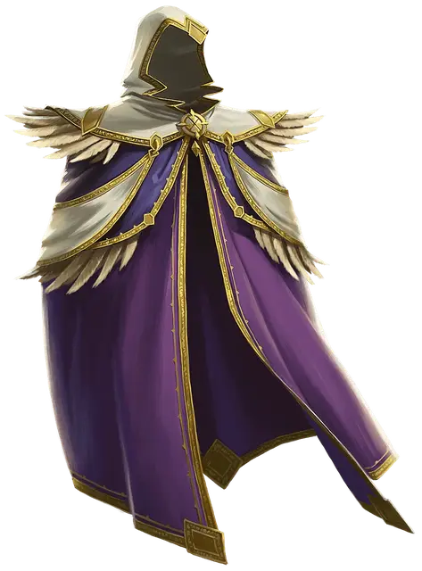

Плащ множества стилей
Cloak of Many Fashions
Чудесный предмет, обычный

Рекомендованная стоимость 100 ЗМ
Пока вы носите этот плащ, вы можете Бонусным действием изменить стиль, цвет и видимые качества этой одежды. Вес плаща при этом не меняется. Независимо от внешнего вида, плащ не может быть ничем, кроме плаща. Хотя он может копировать внешний вид других магических плащей, он не получает их магических свойств.